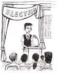

2019年北京市中考英语试题 · 单项填空 第1、2、3、4、5、6、7、8、9、10、11、12题 · 对应解析
1．Mr．Wang is coming to our school．I can't wait to see ．（ ）
A．her B．him C．it D．them
【知识考点】人称代词．
【思路分析】王先生要来我们学校．我等不及要见他．
【解答过程】根据I can't wait to see 可知用宾格作see的宾语，Mr． Wang 指男性单数，用him代替，句意：王先生要来我们学校．我等不及要见他．
故选：B．
【总结归纳】解答此类试题时，务必根据题目的要求，在准确理解句子意思的前提下，结合时态准确作答
2．We planted some flowers the garden yesterday．（ ）
A．on B．to C．in D．of
【知识考点】方位介词．
【思路分析】昨天我们在花园里种了一些花．
【解答过程】on"在…之上、在…时候"；in"在…之内"；of"…的、由…组成的"；to"朝、到、对于"，四者都是介词．on用于具体的时间．由题干"昨天我们在花园里种了一些花．"可知，空格是"在…之内"，用in，因此答案应是in．
故选：C．
【总结归纳】本题考查时间介词的用法，在熟知所供词的含义基础上，根据句意，从而判断出正确答．
3．- Excuse me， is this T-shirt？
- It's 88 yuan．（ ）
A．how much B．how many C．how long D．how old
【知识考点】数量（how many/how much）．
【思路分析】打扰一下，这件t恤多少钱？- 88元．
【解答过程】考查数量．A．how much提问不可数名词，价格等；B．how many提问可数名词复数；C．how long多久，提问时间段；D．how old多大，提问年龄．根据 It's 88 yuan．可知问的是价格，应说这件t恤多少钱？
故选：A．
【总结归纳】仔细分析句子的结构，根据 It's 88 yuan．结合选项作答．
4．- Lily， you finish the letter in ten minutes？
- Yes，I can．（ ）
A．must B．should C．need D．can
【知识考点】情态动词．
【思路分析】--莉莉，你能在十分钟内写完这封信吗？
--是的，我能．
【解答过程】根据回答Yes， I can可知疑问句以can开头，句意：莉莉，你能在十分钟内写完这封信吗？
故选：D．
【总结归纳】情态动词的考查是初中英语考查的重点，平时学习中一定要熟记这些词的基本词义及用法上的不同，注意其用法及在句子中表达语气的不同．考试中结合语境选择合适答案．
5．This cap is nice， it doesn't look good on me．（ ）
A．for B．so C．but D．or
【知识考点】连词辨析．
【思路分析】这个帽子很好看，但是我戴上不好看．
【解答过程】A表示为了，B表示所以，C表示但是，D表示或者、否则．根据题干可知这个帽子很好看，但是我戴上不好看，句子前后是转折关系．
故选：C．
【总结归纳】本题考查连词辨析，基础题，熟悉所给连词的含义，再根据题干即可作出选择．
6．Julie takes good care of the family dog．She is than her brother．（ ）
A．patient B．more patient C．most patient D．the most patient
【知识考点】形容词的比较级和最高级．
【思路分析】朱莉把家里的狗照顾的很好．她比她的弟弟更有耐心．
【解答过程】根据句意：朱莉把家里的狗照顾的很好．她比她的弟弟更有耐心．than是比较级的标志．选项B符合题意．
故选：B．
【总结归纳】熟悉形容词比较级和最高级的用法，结合题意，给出答案．
7．Sam with his friends every weekend．（ ）
A．skates B．is skating C．has skated D．was skating
【知识考点】实义动词的单数第三人称形式．
【思路分析】Sam 每个周末都跟他的朋友们滑冰．
【解答过程】根据句意：Sam 每个周末都跟他的朋友们滑冰．可知时态是一般现在时，主语Sam用动词三单式．
故选：A．
【总结归纳】熟悉实义动词三单式用法，结合题意，给出答案
8．- Tom，what's your dad doing？
- He my bike．（ ）
A．repairs B．will repair C．has repaired D．is repairing
【知识考点】现在进行时．
【思路分析】--汤姆，你爸爸在干什么？
--他在修自行车．
【解答过程】根据问句what's your dad doing？可知答句用现在进行时，be（am，is，are）+现在分词，句意：他在修自行车．
故选：D．
【总结归纳】解答此类试题时，务必根据题目的要求，在准确理解句子意思的前提下，结合时态准确作答
9．Our school life a lot since 2017．We have more activities now．（ ）
A．changes B．changed C．will change D．has changed
【知识考点】现在完成时．
【思路分析】自2007年以来，我们的学校生活发生了很大变化．我们现在有更多的活动，
【解答过程】根据句意"自2007年以来，我们的学校生活发生了很大变化．我们现在有更多的活动 "和since 2017可知，要用现在完成时，其构成为have/ has done．
故选：D．
【总结归纳】考查现在完成时，要牢记现在完成时的构成及用法．
10．If you want to visit the Palace Museum，I tickets for you tomorrow．（ ）
A．will book B．booked C．have booked D．was booking
【知识考点】主从复合句．
【思路分析】如果你想去故宫博物院，我明天就给你订票．
【解答过程】根据句意"如果你想去故宫博物院，我明天就给你订票"和时间状语tomorrow可知，主句要用一般将来时，条件状语从句要用一般现在时代替一般将来时，选项BCD都不符合语法．
故选：A．
【总结归纳】考查主从复合句，要根据句意或提示词，判断时态，选用合适的引导词．
11．My advice on how to save paper by my class last Monday．（ ）
A．accepts B．accepted C．was accepted D．is accepted
【知识考点】一般过去时的被动语态．
【思路分析】我关于如何节约纸张的建议上星期一被我的班级接受了．
【解答过程】主语my advice与动词accept是被动关系，根据last Monday用一般过去时的被动语态，was/were +过去分词，句意：我关于如何节约纸张的建议上星期一被我的班级接受了．
故选：C．
【总结归纳】解答此类试题时，务必根据题目的要求，在准确理解句子意思的前提下，结合时态准确作答
12．- Did you notice in her office？
- Yes．She was going over our writing．（ ）
A．what was Miss Lin doing B．what Miss Lin was doing
C．what does Miss Lin do D．what Miss Lin does
【知识考点】宾语从句．
【思路分析】--你注意到林小姐在办公室里干什么了吗？
--是的．她正在看我们的作品．
【解答过程】考查宾语从句．宾语从句中，从句通常用陈述语序，排除AC．从She was going over our writing．判断句子使用过去进行时，构成were/was+Ving．
故选：B．
【总结归纳】此题考查宾语从句，在熟知宾语从句法的基础上，结合具体题目，仔细分析，便可得出正确答案．
二、完形填空（共8分，每小题1分）
阅读下面的短文，掌握其大意，然后从短文后各题所给的A、B、C、D 四个选项中，选择最佳选项．
Run for Class President

Two months ago，when our class election（选举） started，I decided to run for class president．I enjoyed speaking in public and got along well with people，so I felt it easy to win．But I was 13 that people would feel bad for me if I lost．I was busy preparing in the following week．My plan wasn't to make promises to do things I couldn't 14 but to show my class why I wanted to be president．I put up my posters in hallways and in the classroom．I also spent three hours writing my speech，saying that I was the one they could turn to whenever they had a problem．Since I was 15 prepared，I felt that my chances of winning were strong．
However，when I gave my speech on Election Day，the response （反应） wasn't what I had 16 ．Few people actually listened．When it was my opponent's （对手的）turn，everyone was screaming his name．His speech was short，but all to the point．By then，I realized I should have made mine shorter and clearer．
It was obvious who would 17 ．For the rest of the day，I felt like it was over．I wanted to just go home and cry，but I made it through．
My 18 was right： I didn't win．
The next day，people were still talking about the election．I just pretended （假装） not to hear．But later，things got better．People 19 about the election and talked to me just as they did before．
I don't regret putting time and energy into the election because I've learned that things aren't always going the way I expect．And moments of failure like this build 20 -since then I've learned to face disappointment and grown stronger．